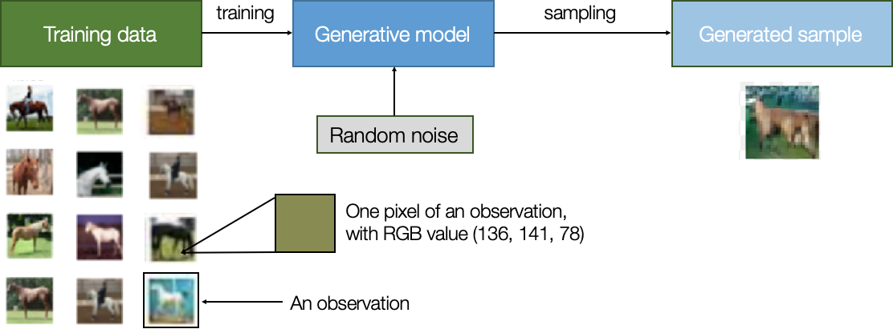

<!DOCTYPE html>
<html lang="en">

<head>
  <meta charset="UTF-8" />
  <meta http-equiv="X-UA-Compatible" content="IE=edge" />
  <meta name="viewport" content="width=device-width, initial-scale=1.0" />
  <title>Map</title>
  <style>
    svg.markmap {
      width: 100%;
      height: 100vh;
    }

    th {
      text-align: center;
    }

    td {
      text-align: left;
      padding: 10px;
    }

    .eq {
      text-align: right;
    }
  </style>
  <script src="https://cdn.jsdelivr.net/npm/markmap-autoloader@0.15.2"></script>
</head>

<body>
  <div class="markmap">

    <script type="text/template">
      ---
      markmap:
        <!-- maxWidth:  -->
        colorFreezeLevel: 6
        duration: 1000
        initialExpandLevel: -1
        extraJs: [""]
        extraCss: [""]
      ---
      - **ML**
        - <table><tr><th>Topic</th><th>Math</th><th>Equation</th><th>ML</th><th>Volcano</th><th>House</th><th>Test score</th></tr><tr><td>**Linear**<br>**Regression**$\;\;\;$</td><td><br><br>$\text{Output:}$<br>$\text{Input:}$<br>$\text{Coefficient:}$<br>$\text{Intercept:}$</td><td><div class="eq">$\hat{y} = \beta_0 + \beta_i x_i$<br><br>$\hat{y}:$<br>$x_i:$<br>$\beta_i:$<br>$\beta_0:$<br></div></td><td><br><br>$\text{Prediction}$<br>$\text{Feature}$<br>$\text{Weight}$<br>$Bias$</td><td><br><br>$\text{Eruption Magnitude}$<br>$\text{g, } time\_series, \dots$<br>$\uparrow weights$<br>$\leftarrow .$</td><td><br><br>$\text{House Price}$<br>$\text{\#bed, \#bath, \dots}$<br>$\uparrow weights$<br>$\leftarrow .$</td><td><br><br>$\text{Test Score}$<br>$\text{\#hours\_studied, \#hours\_slept, \dots}$<br>$\uparrow weights$<br>$\leftarrow .$</td></tr><tr><td>**Calculus**$\;\;\;$</td><td>Cost Function Optimization</td><td></td><td></td><td></td><td></td><td></td></tr><tr><td>**Probability**$\;\;\;$</td><td></td><td></td><td></td><td></td><td></td><td></td></tr><tr><td>**Statistics**$\;\;\;$</td><td></td><td></td><td></td><td></td><td></td><td></td></tr><tr><td>**EDA**$\;\;\;$</td><td></td><td></td><td></td><td></td><td></td><td></td></tr><tr><td>**Regression Algorithms**$\;\;\;$</td><td></td><td></td><td></td><td></td><td></td><td></td></tr></table>
          - **Linear Algebra** <!-- fold -->
            - **Vectors**
              - **Basic Operations**
                - **Magnitude**
                - **Direction**
                - **Vector Decomposition**
                - **Dot Product**
                - **Cross Product**
              - **Advanced Concepts**
                - **Angle Between Vectors**
                - **Vector Projection**
                - **Orthogonality**
                - **Linear Independence**
            - **Matrices**
              - **Basic Operations**
                - **Matrix Addition**
                - **Scalar Multiplication**
                - **Matrix Multiplication**
              - **Matrix Concepts**
                - **Matrix as a System of Linear Equations**
                - **Matrix as Vectors**
                - **Matrix Determinant**
                - <br>**Matrix Rank**:
                  <br># of linearly independent rows or columns in a matrix.
                  <br>**OR**: How many real dimensions does the matrix span?
                  <br>**E.g.**: 3x3 matrix with rank 2 spans a 2D plane in 3D space.
                  $$\begin{bmatrix}1 & 2 & 3 \\ 4 & 5 & 6 \\ 7 & 8 & 9\end{bmatrix}$$
                  Rank of this matrix is 2 because the third row is a linear combination of the first two rows.
                - **Matrix Transpose**
                - **Matrix Inverse**
              - **Advanced Matrix Concepts**
                - **Transformations**
                  - **Identity Matrix**
                  - **Reflection Matrix**
                  - **Shear Matrix**
                - **Matrix Decompositions**
                  - **Row Echelon Form**
                  - **Singular Matrix**
                  - **Eigenvalues and Eigenvectors**
          - **Calculus** <!-- fold -->
            - **Foundation**
              - **Functions**: 
                <br>$f: X \to Y$
                Relation b/w a set of inputs (X) and a set of possible outputs (Y)
                where each input (x) is related to exactly one output (y).
                - <br>**ML example**: Linear Regression Model
                  - **Standard Form Equations**
                    - **Single Feature**: $\hat{y} = \beta_0 + \beta_1 x + \varepsilon$
                      - **Proof**: $y = mx + c \equiv \hat{y} = \beta_0 + \beta_1 x + \varepsilon$
                        $y = mx + c$ (standard form)
                        $\rightarrow y = c + mx$ (rearrange)
                        $\rightarrow y = \beta_0 + \beta_1 x$ (rename constants)
                        $\rightarrow \hat{y} = \beta_0 + \beta_1 x + \varepsilon$ (add error term $\varepsilon$ to account for noise)
                    - <br>**Multiple Features**: $\hat{y} = \beta_0 + \beta_1 x_1 + \beta_2 x_2 + \dots + \beta_n x_n + \varepsilon$
                      - **$\hat{y}$ (Predicted Value)**
                        The value predicted by the model.
                        - **Target** variable (ML)
                        - **Output** variable (ML)
                        - **Label** (ML)
                        - **Prediction** variable (Statistics)
                        - **Dependent** variable (Statistics)
                        - **Response** variable (Statistics)
                      - **$x_1, x_2, \dots, x_n$ (Input Features)**
                        The input variables used to make predictions.
                        - **Features** (ML)
                        - **Predictor** variables (Statistics)
                        - **Independent** variables (Statistics)
                        - **Explanatory** variables (Statistics)
                        - **Input** variables (Statistics)
                      - **$\beta_0$ (Intercept Term)**
                        The value of $\hat{y}$ when all input features are zero.
                        - **Intercept** term (Statistics)
                        - Bias term (not to be confused with algorithmic bias) (ML)
                        - **Constant** term (Statistics)
                      - **$\beta_1, \beta_2, \dots, \beta_n$ (Model Coefficients)**
                        The weights applied to the input features.
                        - **Weights** (ML)
                        - **Parameters** (ML)
                        - **Coefficients** (Statistics)
                      - **$\varepsilon$ (Error Term)**
                        The difference between the predicted value and the true value.
                        - **Noise** (ML)
                        - **Unexplained variation** (Statistics)
                        - **Residuals** (Statistics)
                        - **Random error** (Statistics)
                  - **Matrix Form Equations**
                    - $\hat{y} = X\beta + \varepsilon$
                      - **$\hat{y}$ (Predicted Value)**
                        The value predicted by the model.
                      - **$X$ (Design Matrix)**
                        A matrix of input features.
                      - **$\beta$ (Coefficient Vector)**
                        A vector of model coefficients.
                      - **$\varepsilon$ (Error Vector)**
                        The difference between the predicted value and the true value.
              - **Limits**: $\lim_{x \to a} f(x) = L$
              - **Continuity**
            - **Differential Calculus**
              - **Derivatives**
              - **Partial Derivatives**
            - **Multivariable Calculus**
              - **Gradient**
              - **Convex Functions**
            - **Optimization Techniques**
              - **Gradient Descent**
                - **Core Methods**
                  - **Batch**
                  - **Stochastic**
                  - **Mini-Batch**
                - **Momentum-Based Methods**
                  - **Momentum**
                  - **Nesterov**
                - **Adaptive Methods**
                  - **Adagrad**
                  - **AdaDelta**
                  - **RMSprop**
                  - **Adam**
                  - **AdaMax**
            - **Integral Calculus**
              - **Integration**
          - **EDA** <!-- fold -->
            - ...
            - ...
            - ...
            - ...
            - ...
          - **Feature**<br>**Engineering** <!-- fold -->
            - ...
            - ...
            - ...
            - ...
            - ...
          - **Supervised & Unsupervised Learning**
            - <br><br>**Supervised Learning**
              - **Basics**
                - <br>**What**: ...
                - <br>**Why**: ...
                - <br>**How**: ...
              - **Types**
                - **Regression Algorithms**
                - **Classifications Algorithms**
                - **Bagging & Boosting Techniques**
            - **Supervised**<br>..........vs..........<br>**Unsupervised** <!-- fold -->
              - 
                - <br><br><br>
                  - 
            - <br><br>**Unsupervised Learning** <!-- fold -->
              - **Basics**
                - <br><br><br>**What**: It learns hidden patterns/structures in the data.
                - **Why**: To discover:
                  - clusters of similar data points
                  - graph structures ?? ❌: TODO ??
                  - latent factors, i.e. reducing the dimensionality of the data.
              - **Types**:
                - <br><br>**1 Dimensionality Reduction**:
                  Reducing dimensionality (# of features) of the data while preserving the essential information.
                  
                  - **Only KEEP MOST IMPORTANT features**
                    (Feature Selection) No modification to the
                    features. Just select the most important ones.
                    - <br><br>**Backward Elimination**: Start with all features and remove one by one.
                    - <br><br>**Forward Selection**: Start with no features and add one by one.
                    - <br><br>**Random Forest**: 🚨: TODO
                      Something to do with creating multiple decision trees, voting on their predictions.
                      Feature's importance $\propto$ change in prediction when something about the feature is changed.
                      
                  - **Find NEW combinations of features**
                    (Feature Extraction) Create new features from the existing ones.
                    - **Linear Methods**
                      Pretty established, but can't capture complex patterns.
                      - 
                        **PCA**: Principal Component Analysis
                      - **FA**: Factor Analysis
                      - **LDA**: Linear Discriminant Analysis
                      - **Truncated SVD**: Truncated Singular Value Decomposition
                    - **Non-linear Methods (Manifold Learning)**
                      Can capture complex patterns, but are computationally expensive.
                      - **Kernel PCA**
                      - **t-SNE**: t-Distributed Stochastic Neighbor Embedding
                      - **MDS**: Multi-Dimensional Scaling
                      - **Isomap**: Isometric Mapping
                - <br><br>**2 Clustering**:
                  Grouping similar data points together.
                  
                  - **K-means**
                  - **Hierarchical**
                  - **Density-based**
                - <br><br>**3 Association Rule Mining**:
                  Finding interesting relations between variables in large databases.
                  
                - <br><br>**4 Anomaly Detection**:
                  Finding unusual data points in the data.
                  
                - <br><br>**5 Generative modeling**:
                  Generating new data points from the existing ones.
                  
                - <br><br>**6 Visualization - t-SNE**:
                  Visualizing high-dimensional data in 2D/3D. (see: Dimensionality Reduction $\to$ Non-linear Methods $\to$ t-SNE)
                  
    </script>
  </div>
</body>

</html>